k-Day 044｜口渴的人
口渴的人看不見眼前的風景，這是本日最大的心得。
跟老闆買了兩個餡餅當早餐，在樹下坐著先吃一個，九點準時出發。
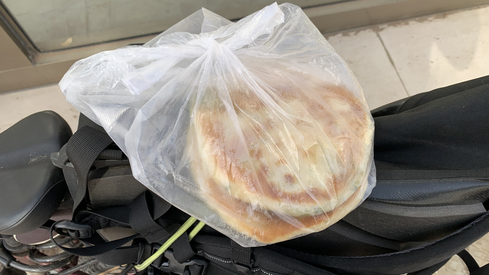
吃了半個馬上走回飯店跟老闆說：「不好意思，再借我上個廁所。」買三次早餐，三次都拉肚子，不過老闆的餡餅沒有像早餐車食物那樣產生反胃感，證明食品來源是正常的?
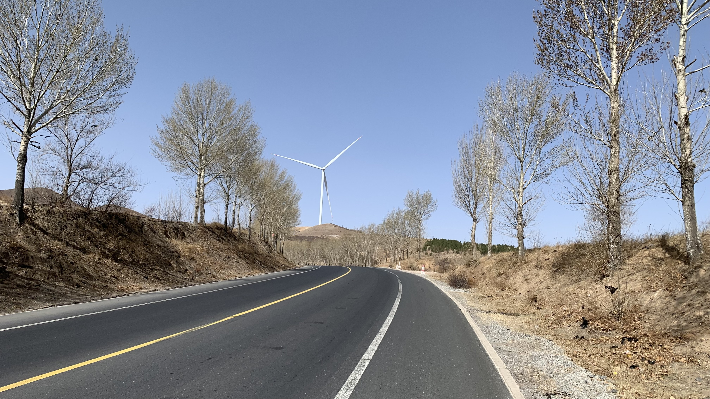
有風車代表此處經常刮大風。今天的陣風風速最高也就58km/h，小意思。至於風向，一整天都在我的正前方。
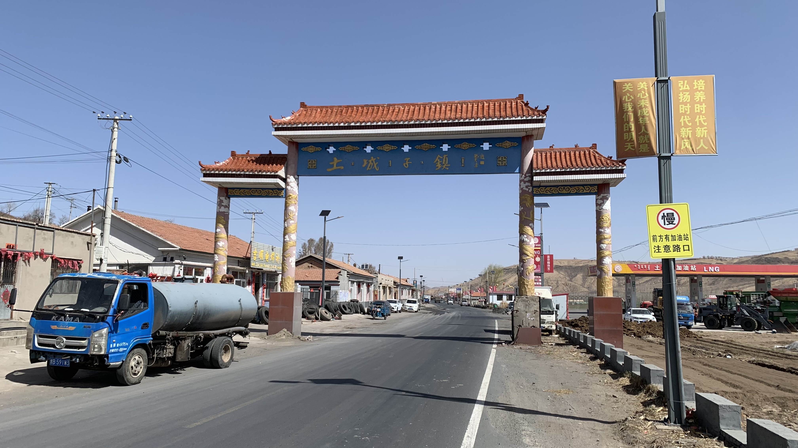
早上11點，路過今日最後一個城鎮「土城子鎮」。當時的我不懂珍惜，不知道他對我有多重要。
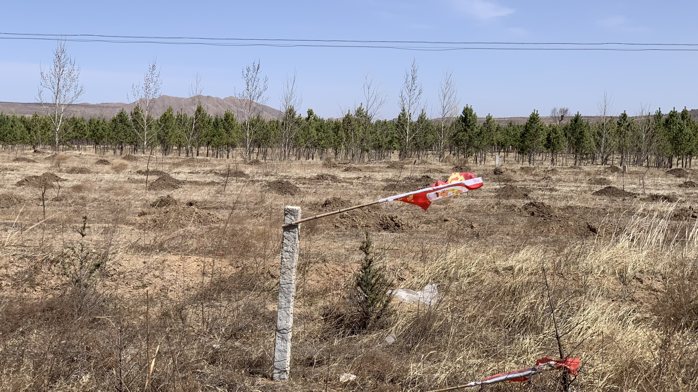
路邊出現被風折彎的旗子。逆風大到下坡時要變換到小盤才能踩著踏板騎下坡。好處是不像側風那樣會把人吹得東搖西晃，安全性上我選擇逆風。
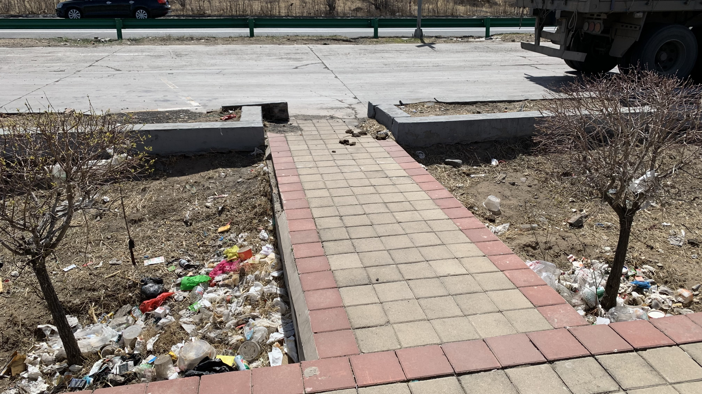
太陽很大，中午找到一座涼亭，想休息一下，四周仍然被垃圾包圍，因此簡單拉伸一下就出發。
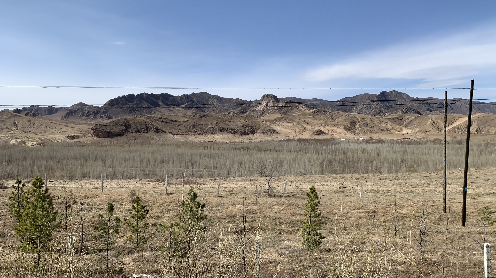
中間的樹林很奇妙，遠遠地看著還以為是湖面倒影，騎到旁邊才發現是一個巨型凹地，裡面長滿了這些顏色漸層的樹。
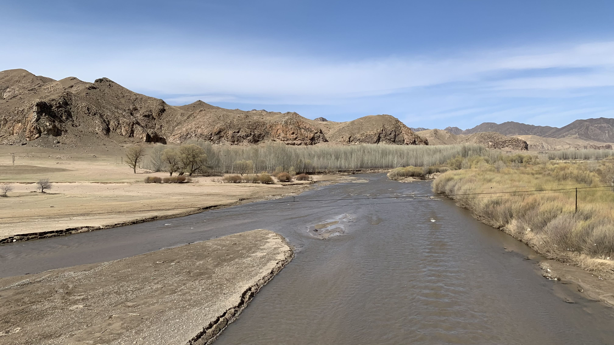
雖然只是一張框起來的照片，但是這些遠山和沒長草的草原是360度包圍著騎車的我，延伸到地平線盡頭的。
也就是說這條路上沒有商店。
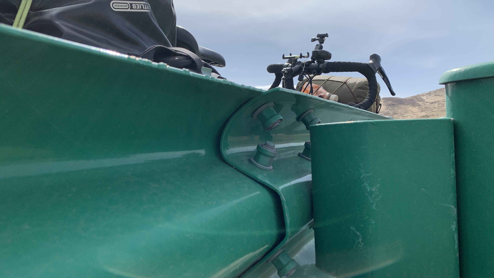
沿著山坡不斷爬升，太陽大到已經穿不了防水外套，肚子餓口也好渴。看到兩台大卡車在路邊休息，於是也跟著跨過護欄遮陰，坐在水泥坡上吃昨晚剩下的鐵蛋。至於水壺裡不到一公升的飲水要珍惜著喝。
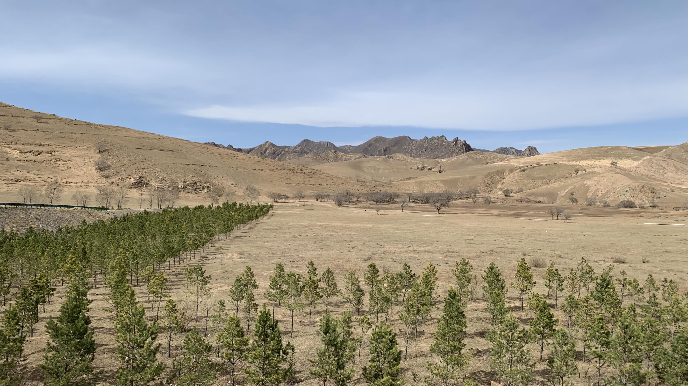
吃鐵蛋時眼前是這樣的風景。
又騎了好一段路，終於看到一間加油站，趕緊進去買水。然而裡面沒有人，當然也沒有水。距離今晚的城市還有四十公里的山路，已經渴到喉嚨乾澀。
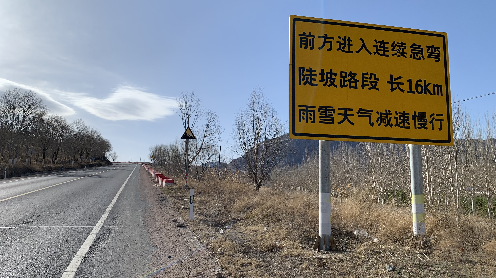
曬著太陽吹著逆風時看到「連續急彎陡坡路段 長16km」的告示，再低頭看看腳邊的水壺架，裡面的水目測少於500毫升。
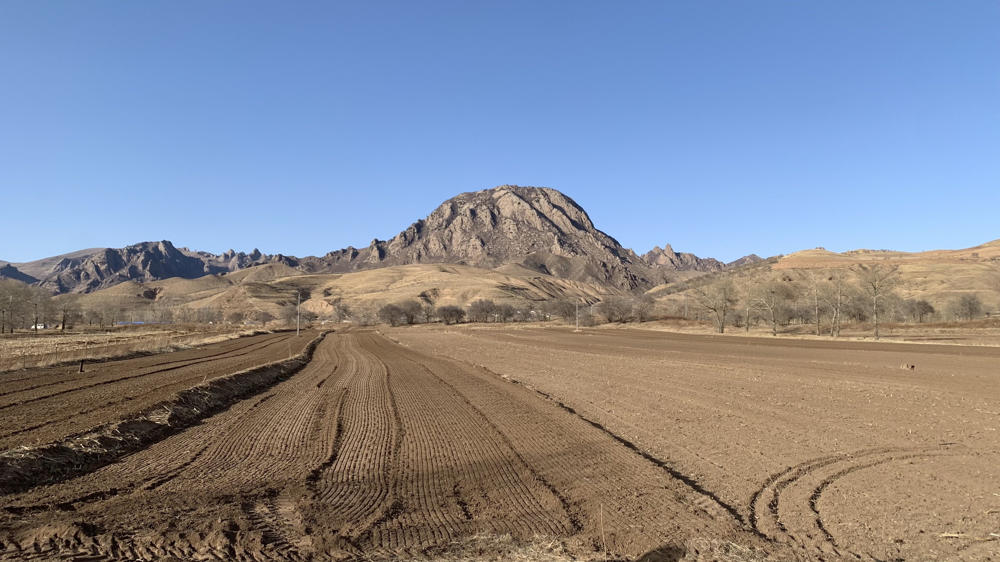
這些山非常特別，是一塊一塊的石頭組成的，一路包圍整個草原。
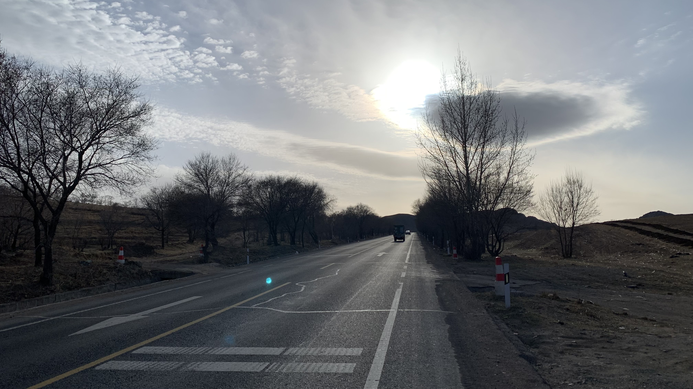
沒有盡頭的坡。也許是知道坡度會做得剛剛好，讓自行車能踩踏上去的角度，因此缺乏下車推車的理由。但是車子後面的行李越來越重，爬坡時每踩一次踏板，就感覺後輪往後方滑了一小段。相當真實的走一步退半步。
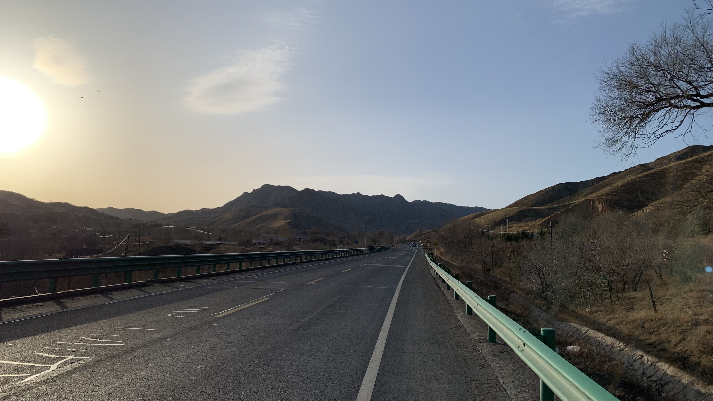
太陽快下山了，還在爬坡，距離下一個加油站還有20公里左右。四周的風景很高端大氣，因此除了口渴沒有其他抱怨。
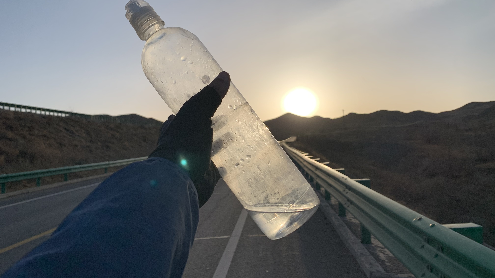
還有12公里，最後的三口水，拍個照後就把他們分成三次喝掉。
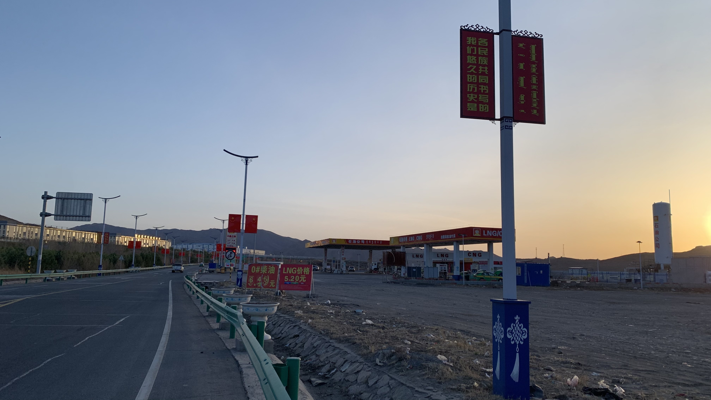
晚上六點半準時抵達綠洲。立刻衝進加油站買水。
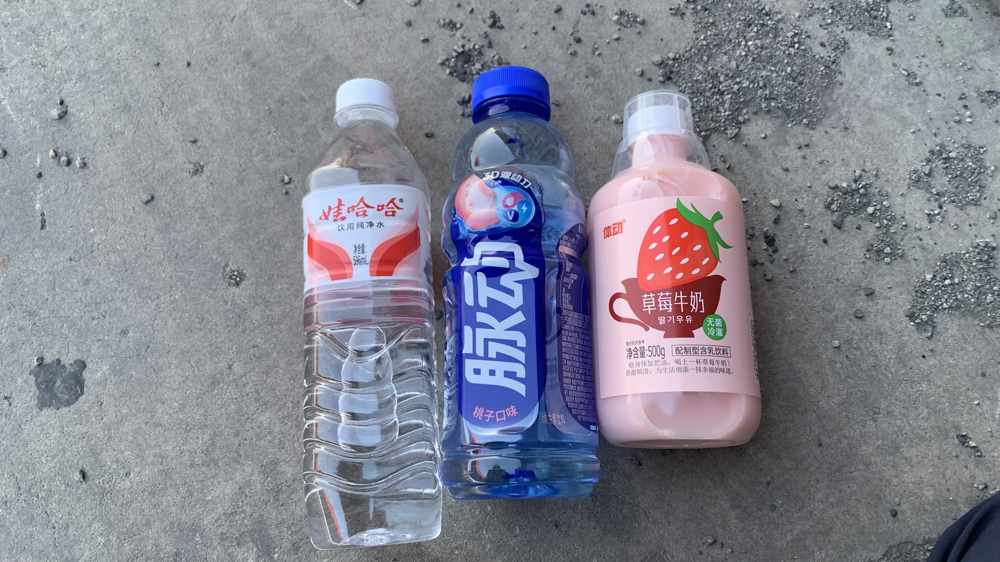
一屁股坐在門口水泥地上，就開始喝起來。其實再走六公里左右就到市鎮了，但是草莓牛奶是第一次看到，而且瓶子剛好可以當成車架最下方的水壺，因此就買來到旅店喝吧。
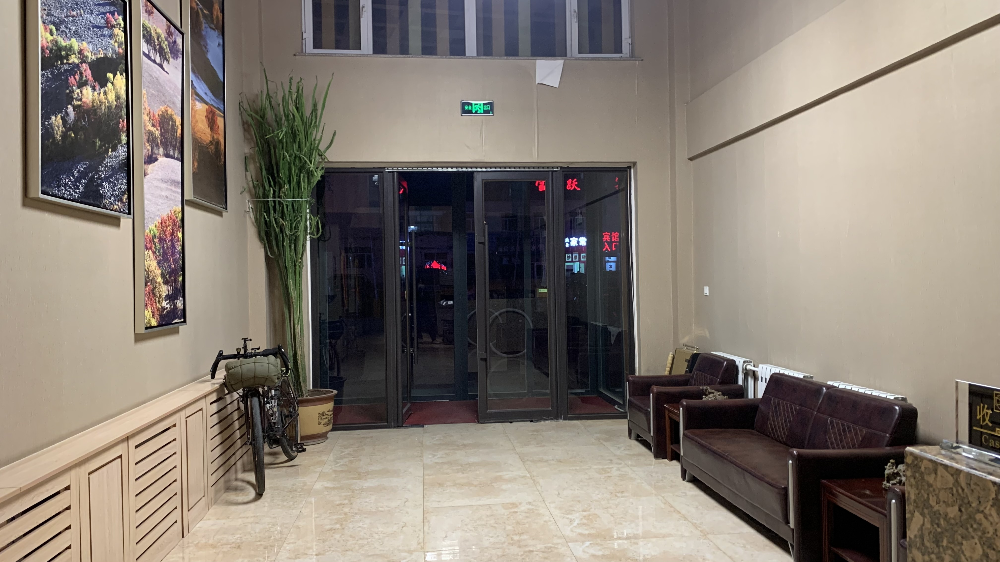
先找了一家便宜住宿，沒想到拒絕我，只好轉向這間看起來較大的旅店。前台本來不讓車子進來，拜託了之後才要我把車放在樓下。因為台胞證沒辦法輸入系統，打了好幾通電話，詢問同事，又說要跟警察通報，大半小時後終於願意讓我付款進房了。
實在太累，上樓放了行李趕緊去買晚餐。
從超商回來的時候在玻璃門外看到本來不讓車進門的櫃檯小姐正在跟二十三號自拍。
他看到我，舉著手機的手還懸在空中，從半蹲的姿勢恢復直立正經的表情，尷尬地笑著說：「你回來啦」
是的，我看到你在跟我的愛駒合照了，很高興你也喜歡他。
癱在床上回顧今天的路線。總共騎了100公里，爬升400公尺。一路上升的過程中其實知道經過的景色很美，也許未來不會再看到這樣特別的風景，但是缺水的時候腦中想的都是遠處終點的水源。
我突然理解了生命中遇到的某些人。和這些人說話時，可以明確感受到他們的眼睛和意識都不在現場，他們說的每句話都指向遠處的目的。他們像是口渴的人。口渴的人看不見眼前，也聽不到當下，他們的眼睛和意識都指向未來。
中國是口渴的國家，大多數人的一生都在追求更好的未來。風景和他人只是流動的背板，其功能僅是供其使用，使他可以呈現當下的從容，並更輕易地抵達自己眼中的目標。
身為今日口渴到懷疑人生，卻不得不在路上噴汗踩踏的人，我覺得這樣的人生很可憐。
也許路上的休息處都如此簡陋也是這樣的原因，在口渴的概念下，休息是不必要的，人的一生只是為了往盡頭移動而已。
今日花費： 飲水＋飲料 、住宿 80元